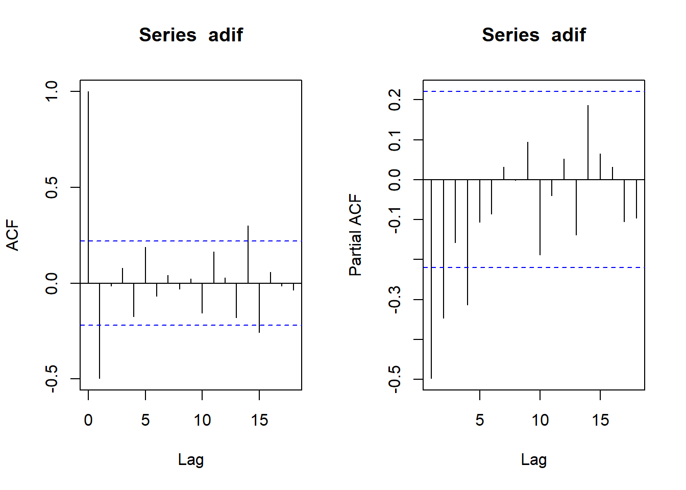

library(forecast)Ejercicios para exponer
20582- Análisis de Datos para el GMAT
Problema 1
En el siguiente enlace encontraréis datos de España correspondientes al año 2021, organizados en 7 variables: 4 relacionadas con el uso de las tecnologías de la información y la comunicación (TIC) en las empresas, y 3 vinculadas al uso de estas tecnologías por la población y al equipamiento tecnológico de los hogares. Las variables son las siguientes:
ebroad: porcentaje de empresas con acceso a Internet de banda ancha (broadband).
esales: porcentaje de empresas que realizan ventas electrónicas.
esocmedia: porcentaje de empresas que utilizan redes sociales.
eweb: porcentaje de empresas con sitio web.
hbroad: porcentaje de hogares con acceso a Internet de banda ancha.
hiacc: porcentaje de hogares con acceso general a Internet, independientemente del tipo de conexión.
iuse: porcentaje de individuos que utilizan Internet.
Apartado a
Realizad un análisis exploratorio de los datos, acompañado de un resumen de las observaciones más relevantes en relación con el contexto del problema, para ello crea una variable region con los siguientes niveles:
Europa Occidental” = c(“BE”, “FR”, “DE”, “AT”, “NL”, “LU”, “IE”),
Europa del Sur” = c(“ES”, “IT”, “PT”, “EL”, “CY”, “MT”),
“Europa del Este” = c(“CZ”, “BG”, “HU”, “PL”, “RO”, “SK”),
“Países Nórdicos” = c(“DK”, “SE”, “FI”, “NO”),
“Países Bálticos” = c(“EE”, “LV”, “LT”)
Aseguraos de incluir, un análisis de la matriz de correlaciones.
Apartado b
Realizad una reducción del número de variables utilizando un Análisis de Componentes Principales (PCA). Justificad si trabajaréis con la matriz de covarianzas o la de correlaciones, considerando las características de los datos. Evaluad la idoneidad de la reducción propuesta, indicando claramente el criterio empleado para seleccionar el número de componentes principales a retener. Finalmente, interpretad las componentes principales seleccionadas, describiendo qué representan en el contexto de los datos y cómo contribuyen al análisis.
Problema 2
Resolved el ejercicio propuesto como práctica en la sección 4.10 de los apuntes. Los datos necesarios para este ejercicio se encuentran en la carpeta de Aula Digital, con el nombre: “Datos para el ejercicio 2 de la práctica 6 (ACP y MDS)”, disponible en la sección “Práctica”.
Problema 3
Una empresa de comercio busca identificar segmentos de clientes según sus patrones de compra. Para ello, se dispone de un conjunto de datos ficticio denominado data_comercio.csv. Este conjunto de datos incluye información sobre la identificación del cliente, la categoría de las compras realizadas, el importe gastado en euros, el número de artículos adquiridos y la fecha de la última compra. La tarea consiste en realizar una segmentación de clientes utilizando métodos de clustering de partición.
Deberéis presentar visualizaciones de los agrupamientos obtenidos con cada método y comparar las diferencias entre ellos, destacando las ventajas y desventajas de cada enfoque. Además, se espera un análisis de las características principales de cada clúster, identificando, por ejemplo, a los clientes con mayor gasto promedio, el número promedio de artículos comprados por grupo y otras características relevantes. Finalmente, con base en los segmentos identificados, se deben proponer recomendaciones estratégicas para diseñar campañas de marketing dirigidas específicamente a cada segmento.
Problema 4
Una empresa de comercio busca identificar segmentos de clientes según sus patrones de compra. Para ello, se dispone de un conjunto de datos ficticio denominado data_comercio.csv. Este conjunto de datos incluye información sobre la identificación del cliente, la categoría de las compras realizadas, el importe gastado en euros, el número de artículos adquiridos y la fecha de la última compra. La tarea consiste en realizar una segmentación de clientes utilizando métodos de clustering jerárquicos con diferentes enlaces y distancias.
Deberéis presentar visualizaciones de los agrupamientos obtenidos con cada método y comparar las diferencias entre ellos, destacando las ventajas y desventajas de cada enfoque. Además, se espera un análisis de las características principales de cada clúster, identificando, por ejemplo, a los clientes con mayor gasto promedio, el número promedio de artículos comprados por grupo y otras características relevantes. Finalmente, con base en los segmentos identificados, se deben proponer recomendaciones estratégicas para diseñar campañas de marketing dirigidas específicamente a cada segmento.
Problema 5
La tabla de datos_antropométricos presenta un conjunto de datos simulados que recopila información sobre 200 observaciones de hombres y mujeres. Este conjunto incluye las siguientes variables:
altura: Altura en centímetrospeso: Peso en kilogramoscintura: Circunferencia de la cintura en centímetroscadera: Circunferencia de la cadera en centímetrosIMC: Índice de Masa Corporal (IMC)grasa_corporal: Porcentaje de grasa corporal
Presentad un análisis exploratorio de los datos junto con un resumen de lo observado en el contexto del problema. Aplicad técnicas de clustering para agrupar individuos que tengan formas de cuerpos semejantes. Escribid una conclusión del análisis realizado en el contexto del problema
Problema 6
La serie temporal ts_1 corresponde a las ventas (en miles de unidades) de un producto en una empresa durante varios trimestres consecutivos. La empresa busca desarrollar un modelo de pronóstico para predecir las ventas futuras del producto. Para ello, dividid la serie temporal en dos trozos: un 80% de las primeras observaciones las usaréis para “aprender” y dejaréis el 20% restante para evaluar la capacidad predictiva del modelo.
6.1 Describid la serie temporal de aprendizaje: gráfico de la serie original, detección de la tendencia, análisis de la variabilidad y estacionalidad (en el caso que aplique).
6.2 Analizad los gráficos ACF y PACF. Descomponed de la serie de acuerdo a un modelo aditivo y uno multiplicativo, seleccionad el mejor. Por último, realizar predicciones con el modelo aditivo o multiplicativo que habéis seleccionado, dibujad vuestros pronósticos sobre la serie total (aprendizaje + test). Calculad el error cuadrático medio de las predicciones. Comentad el resultado en el contexto del problema.
Problema 7
Un equipo médico está estudiando los patrones de presión arterial promedio en un grupo de pacientes para evaluar posibles tendencias en su comportamiento a lo largo del tiempo. Para ello, se han tomado mediciones de la presión arterial diaria durante un periodo de 100 días que podréis encontrar en ts_2.
name= read.table("ts_2.txt")
ts = ts(name)Como la serie es de 100 observaciones, el 80% de estas equivaldrá a las 80 primeras. De este modo, la serie que utilizaremos para aprender va a ser la de estas primeras 80 observaciones.
7.1 Dividid la serie temporal en dos trozos: un 80% de las primeras observaciones las usaréis para “aprender” y dejaréis el 20% restante para “predecir”.
aprender=ts[1:80]
predecir=ts[81:100]7.2 Describid la serie temporal de aprendizaje: gráfico de la serie original, detección de la tendencia, análisis de la variabilidad y estacionalidad (en el caso que aplique).
Empezaremos graficando la serie orignial para identificar vagamente si esta presenta o no algun tipo de tendencia. Además, podemos utilizar también la regresión lineal para cuantificar esta tendencia:
plot.ts(aprender)
tend = lm(aprender~c(1:80))
abline(reg=tend, col='red')Visto el gráfico, es fácil identificar que la serie presenta una tendencia lineal positiva; el coeficiente 0,5 calculado en la regresión nos confirma que existe y nos la cuantifica. Por lo tanto, procederemos a quitarla mediante el método de la diferenciación.
Veamos el gráfico de la serie estacionada:
adif=diff(aprender)
plot.ts(adif)
Analizando el gráfico, podemos concluir que la serie será homocedástica; ya que la variabilidad no cambia demasiado. Además, podemos decir que la serie temporal no tiene ciclos estacionales. Por lo que, mediante las transformaciones hechas anteriormente, esta serie homocedástica sin tendencia, es consecuentemente estacionaria
7.3 Ajustad un modelo ARIMA a la serie temporal para “aprender”, justificad detalladamente la selección de los parámetros del modelo. Visualizad el ajuste del modelo.
Empecemos el proceso del arima por observar la función de correlación simple y parcial de la serie:
par(mfrow=c(1,2))
acf(adif)
pacf(adif)
A contniuación, analizaremos los dos gráficos para plantear un modelo de predicción u otro.
ARIMA(2,1,0): Una de las observaciones que podemos identificar es que la función de correlacion parcial presenta dos barras significativas antes de entrar en la banda. Por lo tanto, una de las primeras propuestas que podemos hacer es un ARIMA(2,1,0) (ya que ya hemos diferenciado una vez la serie).
ARIMA(0,1,1): Observando la función de correlación simple, podemos ver que solo presenta una barra significativa fuera de la banda (el gráfico presenta también la barra de tiempo 0, que siempre es 1 y se debe obviar), antes de entrar en ella. En este caso, este fenómeno se corresponde con un modelo de media móvil de orden 1; es decir, un ARIMA(0,1,1).
ARIMA(2,1,1): Finalmente, podemos plantear el método mixto para comprobar si éste mejora o no la predicción.
Ahora, plantearemos los 3 modelos (de forma paralela) y procederemos a comprobar sus parámetros. Finalmente, podremos elegir el mejor escogiendo aquel cuyo criterio de información de Akaike (AIC) sea menor.
modelo1 = arima(aprender, order=c(2,1,0))
modelo2 = arima(aprender, order=c(0,1,1))
modelo3 = arima(aprender, order=c(2,1,1))
print(modelo1);print(modelo2);print(modelo3);
Call:
arima(x = aprender, order = c(2, 1, 0))
Coefficients:
ar1 ar2
-0.5756 -0.248
s.e. 0.1094 0.109
sigma^2 estimated as 5.561: log likelihood = -180.05, aic = 366.11
Call:
arima(x = aprender, order = c(0, 1, 1))
Coefficients:
ma1
-0.4947
s.e. 0.0773
sigma^2 estimated as 5.706: log likelihood = -181.03, aic = 366.05
Call:
arima(x = aprender, order = c(2, 1, 1))
Coefficients:
ar1 ar2 ma1
-0.4872 -0.2070 -0.0942
s.e. 0.5812 0.2934 0.6028
sigma^2 estimated as 5.56: log likelihood = -180.04, aic = 368.09Con estos cálculos en mano, podemos concluir que el modelo2 es el que menor error va a provocar. Veámos en un grafico su ajuste:
plot.ts(adif)
points(modelo2$residuals, type = "l", col = 2, lty = 2)En el gráfico, podemos ver que parece ajustarse medianamente bien. Comprobemos el error de la aproximación mediante los residuos.
checkresiduals(modelo2,test = F)No esta claro si los errores de este modelo siguen una distribución normal. Veámoslo con una prueba inferencial de bondad de ajuste.
shapiro.test(modelo2$residuals)
Shapiro-Wilk normality test
data: modelo2$residuals
W = 0.98842, p-value = 0.6923El test de Shapiro-Wilk no nos permite rechazar la normalidad de los errores.
7.4 Utilizad el modelo del apartado anterior para realizar predicciones sobre la serie
no utilizada para aprender. Dibujad vuestros pronósticos sobre la serie total (aprendizaje + test). Calculad el error cuadrático medio de las predicciones. Comentad el resultado.
Con el modelo elegido anteriormente (modelo2), procederemos a modelar la serie entera para comprovar si predice bien la evolución a partir de la observación 80 (la parte de la serie que destinamos a predecir)
ts.plot(ts)
forecast1=predict(modelo2, 20)$pred
forecast1_se=predict(modelo2, 20)$se
points(forecast1, type = "l", col = "red")
points(forecast1 - 2*forecast1_se, type = "l", col = "green", lty = 2)
points(forecast1 + 2*forecast1_se, type = "l", col = "green", lty = 2)A continuación, comprobaremos la precisión de la predicción mediante la función accuracy.
accuracy(forecast1,predecir) ME RMSE MAE MPE MAPE
Test set 7.721288 8.261332 7.721288 4.643629 4.643629Entonces, podemos concluir que nuestra predicción tiene un error medio cuadrático de 8,26.
Comentando el gráfico, puede parecer extraño. El resultado de la función predict, es literalmente constante (con valor 157,4807). No entendemos como funciona por dentro esta función y, por tanto, no podemos encontrar nuestro error; pero esto lo comentaremos en el último apartado. Observando el gráfico entonces, nuestra modelo predice que, a partir de la observación 80, la presión sanguínea debería permanecer constante.
7.5 Escribid una conclusión general de vuestro análisis tanto a nivel técnico como en
el contexto del problema. Comentad los aspectos a mejorar.
A nivel técnico, nos parece muy extraño que la predicción sea constante después de haber seguido los pasos usuales. Por esta razón, hemos querido comprovar si nuestro modelo de predicción ARIMA(0,1,1) era realmente el óptimo y nos hemos ayudado de la función
auto.arima() para evaluar cuales serían los mejores parámetros para el método ARIMA.
auto.arima(aprender)Series: aprender
ARIMA(4,1,0) with drift
Coefficients:
ar1 ar2 ar3 ar4 drift
-0.8357 -0.6745 -0.4651 -0.3664 0.4747
s.e. 0.1066 0.1329 0.1321 0.1056 0.0684
sigma^2 = 4.234: log likelihood = -167.15
AIC=346.3 AICc=347.46 BIC=360.51Aunque en el análisis de las funciones de correlación, no nos indicara que fuera este, la mejor combinación de parámetros que nos ha dado la función de R es la de un ARIMA(4,1,0). De este modo, hemos hecho este modelo y hemos visualizado su gráfico:
modeloA = arima(aprender, order=c(4,1,0))
ts.plot(ts)
forecast1=predict(modeloA, 20)$pred
forecast1_se=predict(modeloA, 20)$se
points(forecast1, type = "l", col = "red")
points(forecast1 - 2*forecast1_se, type = "l", col = "green", lty = 2)
points(forecast1 + 2*forecast1_se, type = "l", col = "green", lty = 2)En este modelo, podemos ver como también nos sale una predicción constante similar a la nuestra. Cosa que nos señala que nuestra predicción puede que sea buena dentro de lo que nos permite predecir el método ARIMA.
Drift
Pese a que el método pueda parecer fallido, hemos encontrado que existe el parámetro include.drift dentro de la función arima(). El término drift es exactamente lo que nosotros llamamos tendencia de la serie, por lo que la función ARIMA necesita saber si la serie que queremos predecir tiene o no esta tendencia. Dada esta información, hemos analizado nuestro modelo ARIMA(0,1,1) incluyendo tal parámetro. El resultado, bastante más razonable, es el siguiente:
modeloA = Arima(aprender, order=c(0,1,1),include.drift=TRUE)
forecast1=forecast(modeloA, 20)
plot(forecast1)
points(ts, type = "l", col = "red")Es decir que la tensión arterial, en las siguientes muestras, debería subir al mismo ritmo. Las observaciones que tenemos en la ts de predicción, nos indican que es el comportamiento adecuado.
Problema 8
Entrad a la página de IBESTAT y descargad los datos de la evolución de los turistas con destino principal las Illes Ballears. Analizad esta serie temporal, tomando en cuenta los siguientes puntos:
8.1 Dividid la serie temporal en dos trozos: un 80% de las primeras observaciones las usaréis para “aprender” y dejaréis el 20% restante para “predecir”.
8.2 Describid la serie temporal de aprendizaje: gráfico de la serie original, detección de la tendencia, análisis de la variabilidad y estacionalidad (en el caso que aplique).
8.3 Ajustad un modelo SARIMA a la serie temporal para “aprender”, justificad detalladamente la selección de los parámetros del modelo. Visualizad el ajuste del modelo.
8.4 Utilizad el modelo del apartado anterior para realizar predicciones sobre la serie no utilizada para aprender. Dibujad vuestros pronósticos sobre la serie total (aprendizaje + test). Calculad el error cuadrático medio de las predicciones. Comentad el resultado.
8.5 Escribid una conclusión general de vuestro análisis tanto a nivel técnico como en el contexto del problema. Comentad los aspectos a mejorar.